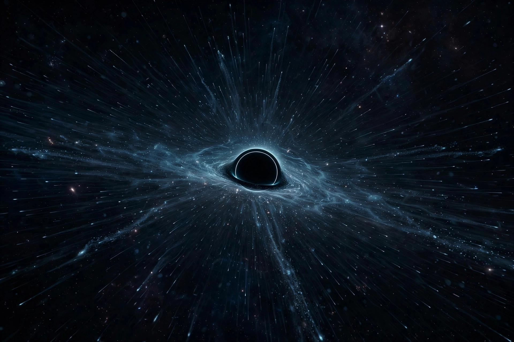

Hawking radiation

[Image: Artist's impression of a black hole slowly evaporating by emitting Hawking radiation]Hawking radiation is thermal radiation that is predicted to be spontaneously emitted by black holes. It is named after the physicist Stephen Hawking, who provided a theoretical argument for its existence in 1974 — combining quantum field theory with curved spacetime — after Jacob Bekenstein had argued (1972–73) that black holes must possess entropy.
In the popular picture, virtual particle–antiparticle pairs near the event horizon can be separated: one partner falls in with negative energy (reducing the hole's mass) while the other escapes as radiation. The temperature is inversely proportional to mass — 6 × 10⁻⁸ kelvin for a solar-mass black hole, far below the cosmic microwave background, so astrophysical black holes currently gain more than they lose — but microscopic holes would evaporate explosively; a solar-mass hole would take ~10⁶⁷ years to evaporate entirely. Hawking radiation gives black holes a temperature and an entropy proportional to horizon area (the Bekenstein–Hawking formula), making them thermodynamic objects and raising the information paradox: thermal radiation seems to carry no information about what fell in, apparently violating quantum mechanics — a puzzle at the heart of Quantum gravity research, where recent 'island' calculations suggest information does escape, encoded subtly.
Observation
Direct detection is out of reach for astrophysical black holes, and primordial black holes (if they exist) would be the only evaporating examples visible today. Analogue experiments — Hawking-like emission from sonic horizons in Bose–Einstein condensates (Jeff Steinhauer, 2016) — have observed the analogue effect, supporting the theory's mathematics if not its astrophysical original.